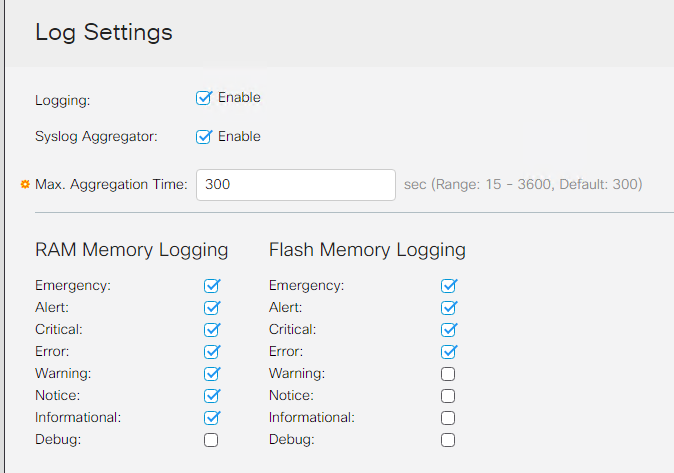
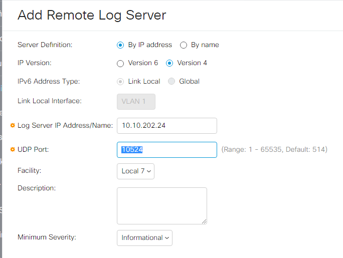
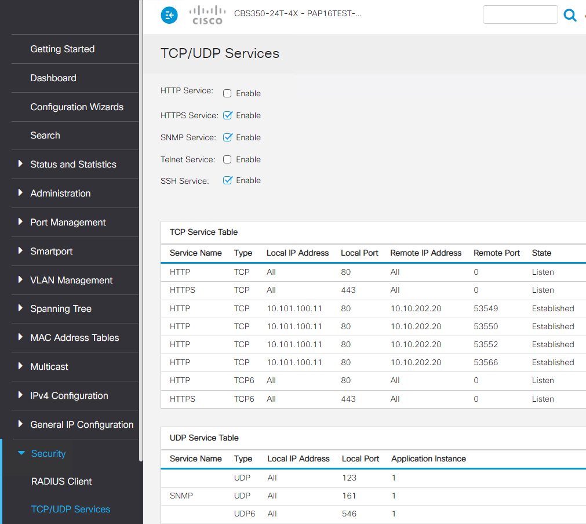
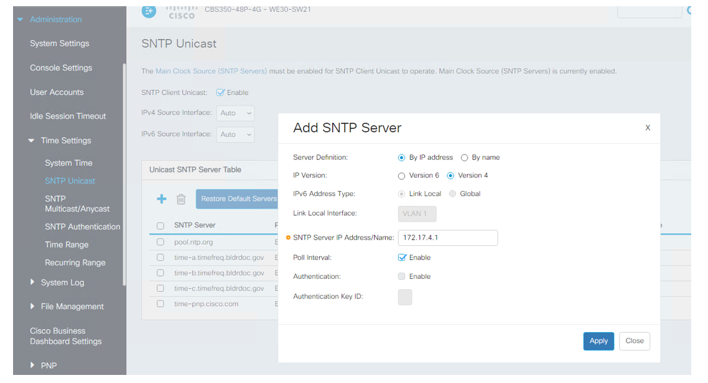
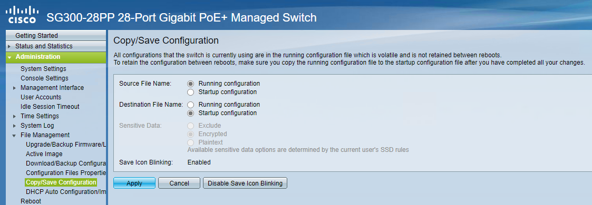
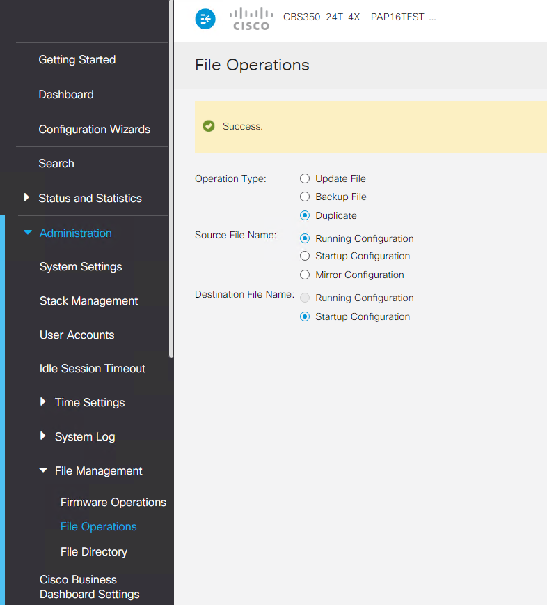

Tijdelijke handleiding diverse aanpassingen switches
Inhoud
Algemeen
Als bij het inloggen de vraag komt om een nieuw wachtwoord in te stellen breek dan het inloggen af en met de switch bij Jasper.
Remote logging instellen
Zet de instellingen op Advanced (anders kun je de poort niet instellen).
Ga naar "Administration \ System log \ Log Settings en vul bij Max Aggregation Time" 300 in.

Ga dan naar "Remote Log Servers" en vul bij "Log Server IP Address/Name" "10.10.202.24" in en bij UDP poort 10524.

HTTP dichtzetten
Ga naar "Security \ TCP/UDP Services" en zet HTTP en Telnet uit en HTTPS, SNMP en SSH aan.

Tijd goed zetten
Zet de switch in de “Advanced mode”. Zet de tijd-instellingen goed.

En voeg als SNTP-server het IP-nummer van de Firewall toe, x.x.4.1.
Dus bijvoorbeeld 172.24.4.1 of 10.32.4.1 etc, afhankelijk van de vestiging van de switch.

Running config opslaan
Bij een SG300/SG350 ziet dat er als volgt uit:

Bij een CBS ziet het er als volgt uit:
Het kan zijn dat je nog even op "Duplicate" moet klikken.
